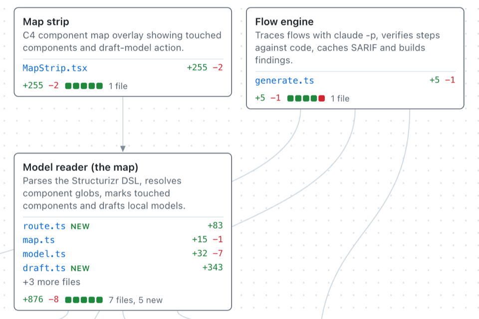
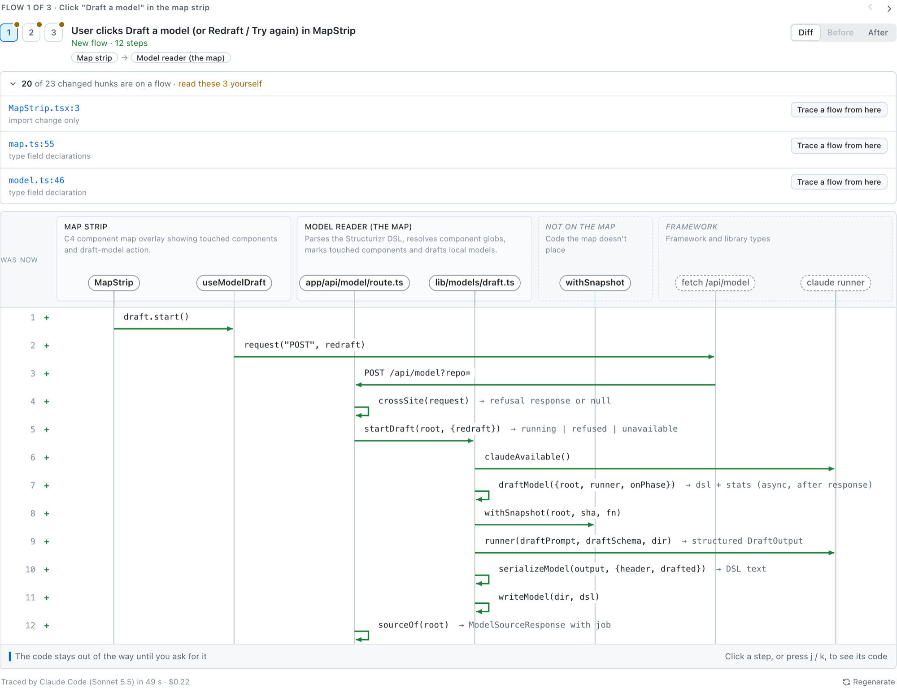

Help understand the architecture
See where things have changed
A C4 map highlights the components the change touches. See how it fits into the system before digging into individual files.
What if your PR review tools showed you this instead of a code diff:

This is a real branch. 1,611 lines of code and here's what changes in the system, drawn by your coding agent.
Works with Claude Code.
AI can write PRs faster than I can understand them, but I'm still responsible for what ships. If our job as software engineers is increasingly about design and architecture, why do our PR review tools still just show us a code diff?
What if our PR review tools answered these questions for us:
We've used sequence diagrams and C4 maps for decades; why not use them to help us understand code changes?
A C4 map highlights the components the change touches. See how it fits into the system before digging into individual files.

A sequence diagram for each user action. I want to know the calls between components and what data passes between them.

A flaw in the data model layer is what bites us in the butt later, so our PR review tools should show us the changes to entities, fields and relationships before we merge.

Backstory is me playing around with this concept, to get me up to
speed quickly when a change needs my attention.
I'd love
your take: would this help you judge a change? What would you still
need before you'd merge?